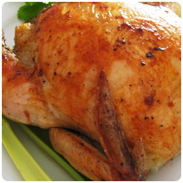

Roast Chicken

How to make a Roast Chicken
This recipe teaches you how to make a delicious Roast Chicken.
this recipe will take a total of about 1hr 40 minuets to complete.
per serving there is about 423 calories, 30.9g of protien, 1.2g of carbohydrates,
32.1g of fat, 97mg of cholestrol and 661.9gm of sodium.
This Roast Chicken recipe should serve about 6 people.
Ingredients
- 1 whole Chicken
- salt and black pepper to taste
- 1 tablespoon onion powder
- ½ cup margarine, divided
- 1 stalk celery, leaves removed
Steps
- Preheat oven to 175 degrees C.
- Place chicken in a roasting pan, and season generously
inside and out with salt and pepper. Sprinkle inside and
out with onion powder. Place 3 tablespoons margarine in
the chicken cavity. Arrange dollops of the remaining
margarine around the chicken's exterior. Cut the celery
into 3 or 4 pieces, and place in the chicken cavity.
- Bake uncovered 1 hour and 15 minutes in the preheated oven,
to a minimum internal temperature of 82 degrees C. Remove from heat,
and baste with melted margarine and drippings. Cover with aluminum foil,
and allow to rest about 30 minutes before serving.
- Enjoy!